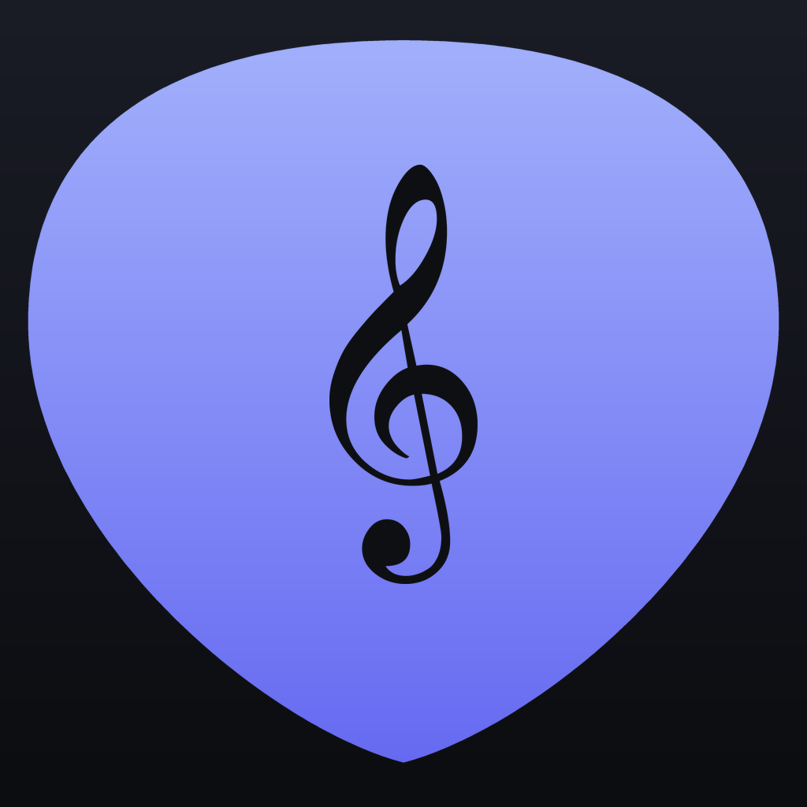

Suas cifras e repertórios organizados no celular, prontos para a hora de tocar.
Escreva, cole ou importe de arquivos .txt e .docx e de páginas da internet. Busque por título, autor, tom, tag ou ritmo.
Suba ou desça o tom de cada música e o app lembra da sua escolha, inclusive nas listas.
Rolagem automática, letra maior com um toque, troca de música arrastando ou pelas bordas e opção de ver só a letra.
Monte a ordem de execução de cada culto, casamento ou show. Uma música pode estar em várias pastas.
Toque em qualquer acorde da cifra e veja como fazer no violão, na guitarra ou no teclado.
Monte a batida com setas e grave trechos da música para lembrar depois, tudo guardado no aparelho.
Gere o PDF de uma música ou do repertório inteiro, no tom atual, para imprimir ou enviar.
Salve um arquivo com tudo no iCloud Drive, no Google Drive ou onde preferir, e restaure num toque.
Os acordes ficam na linha de cima da letra, como nos sites de cifra. O app reconhece sozinho e transpõe.
[Refrão] C G Deixa o dia vir sem pressa D Em7 Que a pressa já passou por aqui
O AcordeOn não coleta, não envia e não vende nenhum dado seu. Tudo o que você cria fica guardado apenas no seu aparelho.